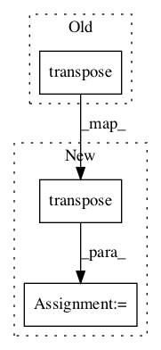

c75c1160a5675edb1f52c13d926bbbc584eb80fd,niftynet/layer/channel_sparse_convolution.py,ChannelSparseConvLayer,layer_op,#ChannelSparseConvLayer#Any#Any#Any#,116

Before Change
transpositions = [[4,3,2,1,0],[1,0,2,3,4],[4,3,2,0,1]]
sparse_kernel = tf.transpose(tf.boolean_mask(
tf.transpose(tf.boolean_mask(
tf.transpose(conv_kernel,transpositions[0]),
_output_mask),transpositions[1]),_input_mask),
transpositions[2])
output_tensor = tf.nn.convolution(input=input_tensor,
filter=sparse_kernel,
After Change
sparse_kernel = tf.transpose(conv_kernel, transpositions[0])
sparse_kernel = tf.boolean_mask(sparse_kernel, _output_mask)
sparse_kernel = tf.transpose(sparse_kernel, transpositions[1])
sparse_kernel = tf.boolean_mask(sparse_kernel, _input_mask)
sparse_kernel = tf.transpose(sparse_kernel, transpositions[2])
output_tensor = tf.nn.convolution(input=input_tensor,
filter=sparse_kernel,
In pattern: SUPERPATTERN
Frequency: 3
Non-data size: 3
Instances
Project Name: NifTK/NiftyNet
Commit Name: c75c1160a5675edb1f52c13d926bbbc584eb80fd
Time:
Author: null
File Name: niftynet/layer/channel_sparse_convolution.py
Class Name: ChannelSparseConvLayer
Method Name: layer_op
Project Name: emedvedev/attention-ocr
Commit Name: 4dc7f459148bd3bc14549d36bd7d09910ca917ca
Time:
Author: null
File Name: aocr/model/model.py
Class Name: Model
Method Name: test
Project Name: rwth-i6/returnn
Commit Name: 1333e33c691f96081d52bd7a0420a1fcfcc4ec91
Time:
Author: null
File Name: returnn/tf/layers/signal_processing.py
Class Name: SplitConcatMultiChannel
Method Name: __init__